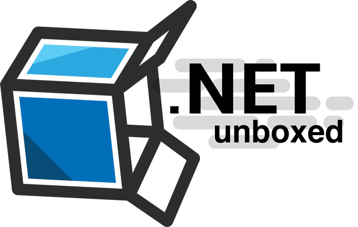

liberating C# from Visual Studio
David Driscoll
@david_blacklite

What is OmniSharp?
OmniSharp is a family of Open Source projects, each with one goal:
To enable a great .NET experience in YOUR editor of choice.
To enable a great .NET experience in YOUR editor of choice.
in 2011
OmniSharp gives you the power...
- To choose your .NET platform
- To choose your .NET editor
- To customize your .NET experience
Liberate yourself from


Pick your editor!
How?
Number of downloads
- Atom - 25,000
- Brackets - #TODO#
- Emacs / Vim - ~400 clones / day
- Sublime - 12,000
- VS Code - #TODO#
So how does it work?
Plugins